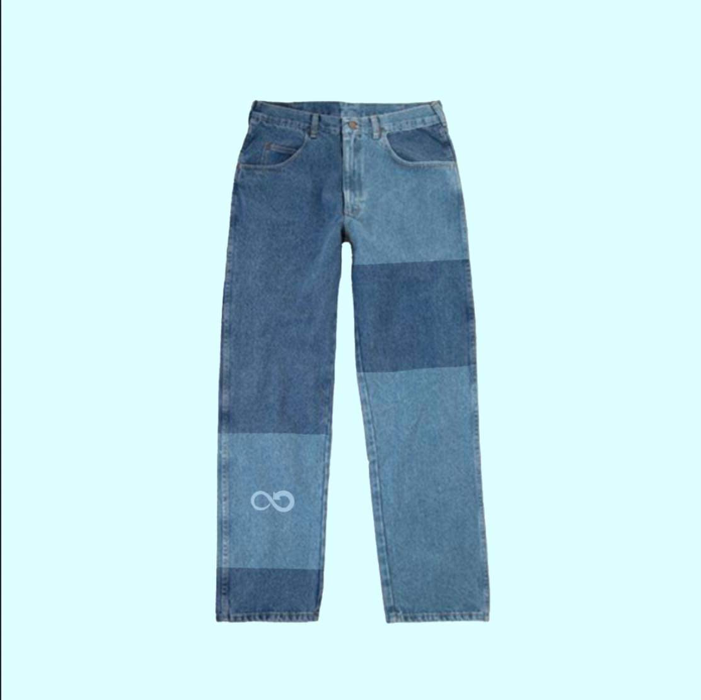
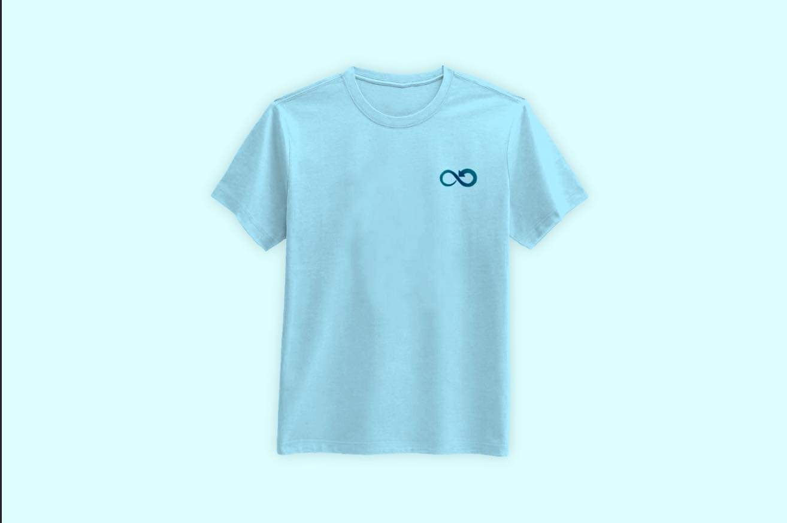

Nos produits

Nos Jeans

Nos T-Shirts
Qui sommes nous ?
Une équipe de 9 étudiants de l’Essec … Il n'en fallait pas plus pour que naisse Kyklothes, la marque de prêt-à-porter éco responsable. Un concept streetwear créé pour toutes les personnes en quête du vêtements recyclés et tendances. Chacun est unique, mais nous partageons tous les mêmes exigences de qualité, d'esthétisme et de transparence. C'est pourquoi nos créations sont travaillées à la main, une par une, comme en haute couture, mais leur prix reste accessible.